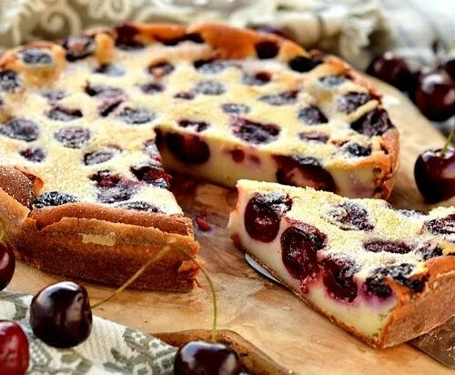

Clafoutis
Ingrédients :
- 500g de cerises (avec ou sans noyaux)
- 100g de farine
- 100g de sucre
- 3 œufs
- 25cl de lait
- 1 sachet de sucre vanillé
- Beurre pour le moule
Préparation :
- Beurre bien ton moule et dispose les cerises au fond.
- Dans un saladier, mélange la farine, le sucre et le sucre vanillé.
- Ajoute les œufs un à un, puis verse le lait petit à petit pour éviter les grumeaux.
- Verse la pâte sur les cerises.
- Fais cuire 35 à 40 minutes à 180°C.
- Laisse tiédir ou refroidir avant de servir.